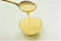

Gajar Halwa With Milkmaid Recipie
Ingredients
- Nestlé A+ Milk
- Khoa
- Milkmaid
- Carrot
- Cashewnut
- Almond
- Pista
- Green Elaichi
- Raisin
- Ghee
Quantity
| Images |
Ingredients |
Quantity |
|
Nestle A+ Milk |
1/4 Cup(51.0 ml) |
|
Khoa |
1.0 Tbsp(10.0 gm) |
|  |
Milkmaid |
2.0 Tbsp(35.0 gm) |
|
Carrot |
2.0 Grated Cup(199.0 gm) |
|
Cashewnut |
1.0 Chopped Tsp(2.0 gm) |
|
Almond |
1.0 Chopped Tsp(3.0 gm) |
|
Pista |
1.0 Chopped Tsp(3.0 gm) |
|
Green Elaichi |
1/4 Powder Tsp(0.5 gm) |
|
Raisin |
1.0 Tsp(4.0 gm) |
 |
Ghee |
2.0 Tbsp(30.0 gm) |
Step-by-Step
Heat a frying pain at a low flame,add 1 cup of grated carrots and pour in 1/4 cup Nestle A+ Milk
Mix,cover and allow it to cook.
Once the carrots are slightly softened add 1.5 tbsp Nestlé Milkmaid, 2 tbsp melted ghee, 1 tsp chopped almond, 1 tsp chopped pista, 1 tsp chopped cashew nut, 1 tsp raisins, 1/4 tsp green elaichi and 1 tbsp khoa, cover and allow it to cook.
Once it is fully cooked and you can smell a beautiful aroma, take off the.
Once it is fully cooked and you can smell a beautiful aroma, take off the.
Garnish with almond slices.
Serve hot or at room temperature.